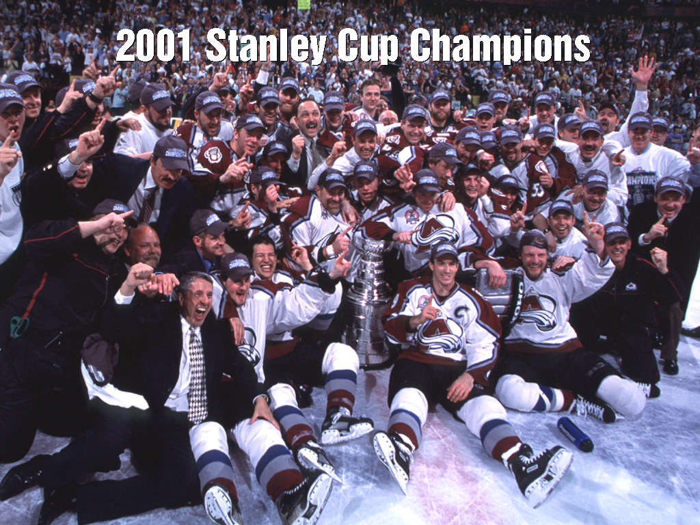

Mission 16W
The 2001 Colorado Avalanche
Mission 16W. This fan page is dedicated to the 2001 Colorado Avalanche and their journey, through adversity, to win 16 games in the playoffs (16W) and be crowned Stanley Cup champions. Not only did they achieve glory as a team and for the state of Colorado, they also helped Ray Bourque fulfil a life long dream by finally winning the cup in the last game of his 22 year career. Here you will find some details of the team's players, statistics, and memorable photos. In the coming months we hope to add some more content for your enjoyment. Go Avs!
